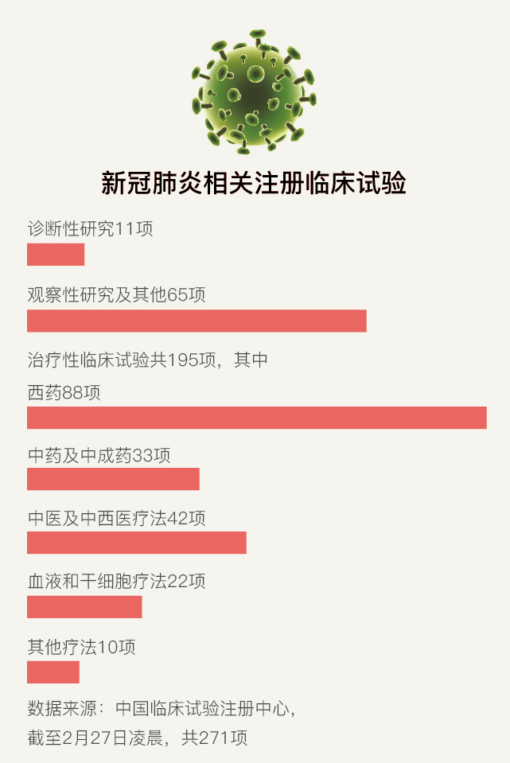

{kind=link}
{kind=link}
解药|新药和疫苗远水难救近火 专家吁政府长期投入
原文链接 备份链接 【财新网】（记者 邸宁）疫情袭来，公众究竟要对新药和疫苗抱有怎样的期望？新冠疫情持续爬坡，目前尚无治愈药物，由各类机构和企业研发的“候选药物”、“候选疫苗”备受关注，然而，有效药物和疫苗的研发进程，或难以与公众的期望 …
科研界正展开一场与病毒的赛跑，希望在最短时间内找到特效药物。根据中国临床试验注册中心统计，截至2月27日凌晨，已有271项新冠肺炎（COVID-19）相关临床试验已经或即将开展，除被推荐可能有效的抗病毒药物外，各类中药、抗菌药、单抗药、干细胞和中医疗法都在其中。
百家争鸣
2月10日，中南大学湘雅公共卫生学院副教授李广迪发表在《自然》（Nature）子刊的文章《2019年新型冠状病毒（2019-nCoV）的治疗选择》介绍，预防和控制新冠病毒感染的可能方式包括疫苗、单克隆抗体、寡核苷酸疗法、多肽类药物、干扰素疗法和小分子药物。
不过，新药研发耗时长达数年，短期来看，老药新用被认为更具可行性。所谓老药新用，是指在已研发出的药物中，找到可能对新冠病毒起效的药物。这种方式在SARS期间也曾被应用，相比17年前，老药筛选的技术条件大有进步——人们已经尝试开发了多个针对冠状病毒的药物，建立了囊括上万个老药的药物分子库和数据库，计算模型和人工智能技术也可以加速筛选进程，多种实验方法并用也提升了药物筛选的准确度。
基于初步筛选，多个机构宣称发明或找到了数十种新冠病毒“有效药物”，一时间真假难辨。
清华大学药学院院长丁胜解释，针对病毒筛选有效药物，分为两种策略，其一是了解病毒感染、复制和发病过程，对其中起到关键作用的靶点针对性寻找药物，验证效果；其二是以预期的药物功能和效果使用病毒模型直接筛选药物，再验证其对病毒的作用机制。其中前者为主流方法。但无论是哪种方式，初步筛选只能支撑其合理性，还须经过严格的体外实验、动物实验和人体试验验证，才能说明其安全性和有效性。
丁胜介绍，目前聚焦的老药大致分为三种原理，其一是以病毒为靶标，通过抑制病毒生命周期中重要的酶的活性来阻断病毒复制；其二是阻止病毒侵染细胞，具体可通过影响病毒与宿主细胞融合的多个步骤实现；其三是调节人体免疫反应，这又分为，在发病前期帮助病人提高激活自身免疫系统抗击病毒，而病情危重期若出现免疫过度激活，影响器官功能，则要对其进行抑制。
上述论文则进一步解释，新冠病毒是一种单链RNA正链包膜β冠状病毒，其基因组编码中包含3-胰凝乳蛋白酶样蛋白酶、木瓜蛋白酶样蛋白酶、解旋酶和RNA聚合酶以及刺突糖蛋白，其中，刺突糖蛋白是介导病毒入侵细胞不可缺少的部分，而其他4种蛋白在病毒增殖中起到关键性作用。
根据该论文，上述第一类靶向病毒的药物包括核苷酸类似物和蛋白酶抑制剂两类，其中，核苷（酸）类似物可以抑制病毒复制所需的RNA聚合酶，代表药物有法匹拉韦、瑞德西韦、利巴韦林等；后者代表药物为洛匹那韦/利托那韦，其被认为可能对木瓜蛋白酶样蛋白酶或3-胰凝乳蛋白酶样蛋白酶产生抑制作用。
磷酸氯喹则被认为可以阻止病毒侵染细胞，属于上述第二类潜在有效老药，原因在于其可以改变细胞表面pH值，从而抑制病毒与细胞膜发生融合，并抑制细胞内一系列膜融合过程，从而抑制病毒在细胞内的成熟和释放；此外，磷酸氯喹也被认为具有免疫调节功能。同样具备免疫调节功能的还有α-干扰素，该药物早已获批与利巴韦林组合用于乙肝病毒和丙肝病毒的治疗，在新冠病毒中也被认为可帮助人体增强免疫功能。
尽管多个药物被指具有潜在有效性，目前尚无任何临床试验结果确切佐证。在老药新用之外，海内外机构还聚焦于预防性疫苗研发，多个疫苗声称在短期内有望进入人体试验。不过，专家提示，疫苗研发涉及临床前研究、临床试验、申报上市、规模化生产等多个环节，依靠其抗击疫情仍是远水难救近火。
事实上，SARS期间，老药新用与疫苗研发均有过尝试，但伴随疫情结束，相关研究相继停止，未有结果问世。17年后，中国又一次面临公共卫生重大挑战，有效应对方案仍未能如期而至，基础科研与应急储备再次受到拷问。人类与传染病的斗争已经持续了数百年，在科技水平相较以往尤其17年前的那场疫情已有长足进步的今天，疫苗与药物研发能否带来惊喜？
多个潜在药物
1月初，武汉病毒研究所确定新冠病毒全基因组序列，并分离出病毒毒株，药物筛选随即具备基础。与SARS不同的是，抗病毒药物应用在中国具备了更多经验。随后一个月内，多个抗新冠病毒“潜在有效药物”浮出水面，包括抗艾滋病毒用药洛匹那韦/利托那韦，抗埃博拉病毒用药瑞德西韦，抗流感用药法匹拉韦、阿比多尔，及抗疟疾用药磷酸氯喹等。
洛匹那韦利托那韦最先受到关注，因其在SARS期间已有研究基础。这是一种抗艾滋病毒用药，由洛匹那韦、利托那韦组成，通过抑制HIV病毒蛋白酶，来阻断病毒的组装、复制和发挥功效。由于SARS病毒、MERS病毒和新型冠状病毒都有一个和艾滋病毒相似的蛋白酶靶点，其结构和功能有一定的相似性，因此具备理论可行性。
2004年，香港大学、香港玛丽医院等机构联合发布论文，称通过体外研究，对41名SARS患者使用洛匹那韦/利托那韦和利巴韦林进行联合治疗，随访3周，并与111例仅接受利巴韦林治疗的患者的历史数据进行比较，发现接受联合治疗的患者在症状出现21天后发生急性呼吸窘迫综合征（ARDS）或死亡等不良事件的风险更低（2.4%对28.8%）。
尽管上述研究被认为不具备强说服力，但仍为最初的药物选择提供参考。国家卫生健康委员会自1月16日发布第一版《新型冠状病毒感染的肺炎诊疗方案》就推荐了该药物。1月23日，患上新冠肺炎的北京大学第一医院呼吸和危重症医学科主任、新型冠状病毒感染肺炎专家组成员王广发称，洛匹那韦利托那韦对其个人有效。目前，洛匹那韦利托那韦作为世界卫生组织计划的两种重点疗法之一，正在中国开展临床试验。
更多药物随后被各类科研机构筛选得出。科技部生物中心主任张新民介绍，通过计算机模拟筛选体外活性测试，普通冠状病毒感染的细胞初筛、新型冠状病毒活性实验等多轮筛选，全国科研团队在7万个化合物中筛选出少数几个药品，包括瑞德西韦、磷酸氯喹、法匹拉韦等。尽管7万个化合物被指有所夸张，但聚焦药物均在科学层面具备合理性。
瑞德西韦为美国吉利德公司在研药物，在全球范围内尚未获批上市。其抗埃博拉病毒临床试验于2018年在非洲启动，但由于在四个药物治疗组中疗效劣于另外两个药物，后被停止试验。由于该药物属于广谱核苷类似物，此前也曾被用于SARS和MERS体外和动物模型研究，吉利德称其显示出一定有效性。
据武汉病毒所副所长肖庚富介绍，该所在药物筛选过程中发现，瑞德西韦在细胞水平上能有效抑制新冠病毒的感染，经初步确证后，于1月19日由其合作单位（即军事科学院军事医学研究院国家应急防控药物工程技术研究中心）向有关部门报告，并于1月21日申报中国发明专利。
该所未与原研药厂沟通而申报用途专利的做法引发争议，更值得注意的是，瑞德西韦潜在有效性在其申报专利10天后方引起重视，且该提示来源于美国。2月1日凌晨，权威医学期刊《新英格兰医学杂志》（NEJM）在线发表论文介绍，美国首例新冠肺炎确诊病例接受瑞德西韦治疗后，病情迅速缓解。五天后，瑞德西韦在中国快速开启两项新冠肺炎临床试验。
随后，一款抗流感用药因专家推荐受到关注。2月4日，中国工程院院士、国家卫健委高级别专家组成员李兰娟研究团队通过媒体发布研究成果称，阿比多尔和达芦那韦两个药物能有效抑制冠状病毒，并建议纳入卫健委新版指南。李兰娟介绍，体外细胞实验显示，阿比多尔在10微摩尔-30微摩尔浓度下，与药物未处理的对照组比较，能有效抑制冠状病毒达到60倍，并且显著抑制病毒对细胞的病变效应。达芦那韦在300微摩尔浓度下，能显著抑制病毒复制，与未用药物处理组比较，抑制效率达280倍。
上述数据引发质疑。专家指出，若上述实验数据属实，说明两款药物生物活性较差，尤其是艾滋病用药达芦那韦，实际难以在体内达到有效浓度。阿比多尔被认为是一种多靶点抗病毒药物，曾在SARS冠状病毒体外实验中体现出病毒抑制效果。
另一款抗流感用药法匹拉韦，也在细胞实验中显示潜在有效性。该药物是一种核苷类似物，可以用于治疗广谱的RNA病毒，2014年由日本福山化学有限公司研发上市，适应证为治疗成人新型或再次流行的流感，但仅限于其他抗流感病毒药物治疗无效或效果不佳时使用。根据上述中南大学湘雅公共卫生学院论文，法匹拉韦显示了对新冠病毒的潜在有效性。
法匹拉韦也已进入临床试验阶段。2月14日起，深圳市第三人民医院官网通报，法匹拉韦在治疗新冠肺炎临床试验中，从试验组和对照组共80例患者的初步结果显示，疗效优于洛匹那韦/利托那韦，且未发现不良反应。次日，科技部在新闻发布会上通报法匹拉韦等药物显示初步疗效。2月16日，海正药业则通告其生产的法匹拉韦仿制药获国家药监局批准有条件上市，用于治疗流感，同时应急批准该药物进行新冠肺炎临床试验。

2月17日，科技部生物中心副主任孙燕荣介绍，抗疟药物磷酸氯喹对新冠肺炎治疗有效，且已经过临床应用和专家论证。磷酸氯喹是一个抗疟疾老药，于1934年由德国拜耳制药的科学家人工合成，成为继奎宁之后广泛使用的疟原虫感染预防和治疗药物，该药物被认为是潜在广谱抗病毒药物，并具有免疫调节功能。
据军事科学院军事医学研究院副研究员曹瑞源等人2月4日发表在《细胞研究》（Cell Research）的读者来信，氯喹通过增加病毒/细胞融合所需的内体pH值来阻断病毒感染，并可干扰SARS病毒细胞受体的糖基化。在体外实验中，磷酸氯喹的EC50=1.13 uM，SI大于88，说明该药物在细胞水平上能有效抑制新冠病毒的感染。孙燕荣介绍，目前磷酸氯喹已经在全国十余家医院开展新冠病毒治疗的安全性和有效性评价。
边争议边应用
尽管多方声音为潜在有效药物背书，但目前尚无一药物被认为确切有效。治病救人却刻不容缓，临床的使用已经不能等待，只能根据经验和此前的研究数据，各级卫健委和医疗机构已将潜在药物纳入治疗方案。在实际应用中，由于各地诊疗指南不同、医生用药经验和习惯不同，各类药物的应用仍然混乱，争议不断。
由国家卫健委发布的《新型冠状病毒感染的肺炎诊疗方案》是各地救治工作的导引。至今该方案已发布六版，用药方案不断变化。
洛匹那韦利托那韦在六版诊疗方案中均被推荐试用，但部分研究认为其并无疗效。上海市公共卫生临床中心感染与免疫科团队2月21日发布回顾性分析称，对比不服用任何抗病毒药物的治疗方案，洛匹那韦利托那韦并不具备改善患者症状和加快病毒核酸转阴时间的效果，且不良反应发生率较高。而广州市第八人民医院党委副书记、主任医师张复春则介绍，在该院“阿比多尔与克立芝（洛匹那韦利托那韦）治疗新冠肺炎随机对照研究”中，初步显示阿比多尔疗效好于克立芝。
广谱抗病毒药物利巴韦林一度陷入过度使用危险。2月5日，国家卫健委网站公布的第五版诊疗方案中，增加利巴韦林为试用药物，用药剂量为成人首剂4克，次日每8小时一次（即一日3次），每次1.2克。但根据利巴韦林说明书，其用于病毒性呼吸道感染时，成人一次0.15克，一日3次，连用7天。对比发现，2月5日发布的第五版诊疗方案中，利巴韦林的首剂剂量是常规剂量的26.7倍；次日剂量是常规剂量的8倍。两种建议剂量都已经远远超过了说明书标注的常规剂量，引发脏器损伤风险。
利巴韦林超剂量问题引起多位一线医生关注。2月8日，国家卫健委对其推荐剂量进行修改，调整为成人500毫克/次，每日2次至3次静脉输注。
被科技部和诊疗指南推荐有效的药物磷酸氯喹，则被警示严重毒副反应。《美国医学会杂志》（JAMA）1980年发表的一篇综述就已显示，过量服用磷酸氯喹将有急性致死风险，致死剂量为成人一次4克，儿童一次1克。目前，国家卫健委推荐诊疗方案为成人0.5克，每日2次，疗程不超过10天，但并未指出其可能产生的不良后果。
事实上，随着青蒿素的出现，磷酸氯喹在临床抗疟中已经很少使用，但在部分风湿性疾病中有应用。“至于用于新冠肺炎，在国家第六版方案中提到可以应用，之前可能在武汉等地有用或进行临床研究，具体使用情况不详。氯喹这类药物副作用和药物间相互作用相对偏多，武汉等地的经验似乎提示这药临床在新冠肺炎患者使用中的安全性有较大顾虑，当然副作用是因人而异的，重要的是要掌握好剂量、疗程，并注意密切观察，尤其是同时使用多种药物特别是抗病毒药物以及应用于具有心脏疾病的患者时，要注意观察对心脏和眼等的副作用。此外，此类药物治疗新冠肺炎的有效性，也需通过临床观察和研究来进一步证实和确认。”上海市公共卫生临床中心感染与免疫科主任医师沈银忠提示。
更大争议来自糖皮质激素。它是皮质类固醇的一种，也是机体内的一类重要调节分子，具有调节糖、脂肪、蛋白质合成物和代谢的作用，还具有抗炎、抗毒、抗休克和免疫抑制作用，临床应用广泛，在SARS中也曾有应用。自诊疗方案第四版起，糖皮质激素被列入重症、危重症患者短期治疗方案，推荐剂量为不超过每天12mg/kg-2mg/kg。
广州市第八人民医院感染科ICU副主任医师李粤平对财新记者介绍，糖皮质激素的作用在于抑制免疫，可减轻体内炎症反应，但也可能造成病毒清除时间延长，因此使用争议较大。
多项研究曾警示糖皮质激素的使用风险。一项对309名中东呼吸综合征（MERS）危重症患者的回顾性观察发现，使用皮质类固醇与90天死亡率的差异无关，但与呼吸道分泌物中病毒RNA的清除延迟有关。
另一篇2019年的系统回顾和荟萃分析，总结了10项关于流感的观察性研究，共计6548名患者，结果显示使用皮质类固醇的患者死亡率增加，或重症监护病房的住院时间增加。世界卫生组织1月28日发布暂行指南建议，除非有特殊原因，在临床试验之外，不要常规性使用皮质类固醇治疗病毒性肺炎或急性呼吸窘迫综合征。
不过，财新记者采访发现，糖皮质激素在新冠肺炎治疗中仍然应用较为广泛。多位重症科医生告诉财新记者，糖皮质激素在重症患者中的使用比例或达60%以上，部分医院甚至高达80%，此外临床中还发现，部分患者在转为重症前就已经使用糖皮质激素。北京宣武医院重症医学科主任姜利告诉财新记者，与SARS时期相比，糖皮质激素在新冠肺炎中的使用剂量相对低很多，但低剂量糖皮质激素是否依然会对病人带来危害，目前仍没有研究能明确。
中药被部分专家认为起到抗疫功效，但也引起争议。自第三版诊疗方案起，各类中药和中成药开始被推荐用于新冠肺炎治疗，随后包括喜炎平注射剂、血必净注射剂在内的多个中药注射剂也被纳入诊疗方案，并被用于重症治疗。多位一线医生告诉财新记者，中药在临床治疗中显示一定效果，但主要是调节机体免疫状态，对病毒本身并不起作用，更不能用于预防。
艰难验证
可能性与争议并存，如何真正验证潜在药物的安全性与疗效？
循证医学中，开展临床试验，将药物用于人体，并通过系统科学的研究，才能揭示药物作用和不良反应。根据中国临床试验注册中心统计，截至2月27日凌晨，共有271例新冠肺炎相关临床研究拟开展或已经开展，洛匹那韦利托那韦、阿比多尔、磷酸氯喹、法匹拉韦均在验证行列。
其中，瑞德西韦临床试验最受瞩目。财新记者了解到，2月1日美国报告首例瑞德西韦有效案例后，中国国家药监局在48小时内紧急批准其用于新冠病毒治疗的临床试验，试验首批拟纳入761例患者，包括轻、中症患者308例，重症患者453例，中日友好医院、中国医学科学院药物研究所为牵头单位，研究在武汉市金银潭医院等十几家医疗机构开展。2月6日，首批入组患者开始用药。目前，吉利德已将上述试验扩展为多中心临床试验，全球预计纳入约1000例患者。
瑞德西韦临床试验采取随机、双盲、安慰剂对照方法展开，这意味着研究揭盲前，医生和患者对用药情况、研究结果均不知晓，这种方法避免了研究结果的偏倚性，被认为是验证药物安全有效性的金标准，但这也同时意味着，瑞德西韦对新冠病毒是否有效，需待4月27日试验揭盲方可知晓。
这或难以满足疫情防控时效要求。丁胜认为，随机双盲对照试验的目的是通过临床数据支持药物获批上市，但在极为特殊的疫情下，应在科学和合法合规的前提下，对临床设计和患者用药做出更多考量。一个可行的方案是，在瑞德西韦临床试验中引入独立第三方数据监察机构，在临床试验进展至一定阶段时予以分析。
上述方案或已被纳入试验考量。2月20日，世卫组织总干事谭德塞表示，两项重点疗法将在三周内得出初步临床试验结果。这两项重点疗法即为瑞德西韦和洛匹那韦利托那韦。吉利德科学病毒学副总裁Tomas Cihlar称，将在适当的时候决定是否开展独立的药物安全性检测，以及进行初步和中期临床试验数据分析。
然而，瑞德西韦临床试验仍面临难题。2月24日，中国-世界卫生组织新型冠状病毒肺炎联合专家考察组召开新闻发布会。世卫组织专家提出，目前认为真正有效的药物只有瑞德西韦。但令他担忧的是，中国临床试验的一位负责人、中日友好医院副院长、呼吸与危重症医学科专家曹彬透露，现在招募病人变难，原因是一些希望并不太大的临床试验在与这个药物竞争临床资源。该专家提出，需要让那些更有希望的药品优先进行临床试验。
Tomas Cihlar则透露，针对重症新冠肺炎患者的临床试验计划招募453人，目前已招募数约三分之一。
曹彬所指难题的背后，是新冠临床试验的蜂拥而起。上述270余项新冠肺炎临床试验，不仅包含潜在有效抗病毒药物的临床试验，还包括各类中药、中药注射剂、干细胞、脐带血以及太极拳、六字诀等中医疗法，且许多试验设计缺乏科学性。
世卫组织对中国新冠病毒相关试验的科学严谨性作出警示，并建议对临床试验的开展设立框架，在时间有限、资源有限的情况下，确定解决问题的优先级。
南京医科大学陈峰等人发表于《中华流行病学杂志》的《关于科学、规范、有序地开展新型冠状病毒肺炎相关临床试验的建议》亦指出，研究缺乏高质量的设计，例如样本量不足、对照组选择不合理、分组的随机化与遮蔽执行不严格、治疗指标的评价标准不客观等，将导致受试者、研究者和管理部门的努力付诸东流，而目前患者数量显然难以满足研究要求。该文章还提示，治疗无效还可能给患者带来副作用。
“研究者需要自律，严谨科学地设计临床试验，避免利益冲突。”该文章呼吁。上海市公共卫生临床中心感染与免疫科主任医师沈银忠则告诉财新记者，临床试验必须符合伦理和法律，同时对试验机构、研究者的能力和技术进行评估，试验过程规范进行，及时报告不良反应，并做好预备方案。
疫苗不在短期
特效药的寻觅争分夺秒，但即便如期觅得，它也只能针对患者进行救治。随着疫情在全球蔓延，一些专家表示，在与病毒持续作战的同时，也要做好应对国际大流行的准备。提供保护健康人群的有效方案是当务之急。
对健康人群来说，疫苗是防止病毒感染的最有力手段，也是防止疫情扩大的最终出路，新冠疫苗研发自疫情初期就被寄予厚望，国内外科研机构和企业均参与其中。
疫苗研发需经过临床前研究、申报临床、临床试验机构申请、注册临床试验、疫苗上市、疫苗生产、疫苗质量标准控制等过程，通常耗时达8年至20年。
而根据《疫苗管理法》，应对突发事件和传染病疫情，国家药监局对该类疫苗予以优先审评审批；经评估获益大于风险的，可以附条件批准注册申请，在一定范围内紧急使用，并可免予批签发。
新冠疫情暴发后，中国政府极其重视疫苗的研发，在P3实验室和动物模型共享、临床试验资源统筹等方面协调，药品审评也将采取早期介入、并联分节点审评等。
据国家卫生健康委员会副主任曾益新介绍，目前疫苗研发有5条技术路线同步开展。第一条路线是灭活疫苗，新冠病毒生产出来以后进行灭活，经过安全性、有效性评价后可以用于临床试验；第二条技术路线是重组基因工程疫苗，把新冠病毒的最有可能作为抗原的蛋白通过基因工程的办法大量生产，并注射到人体，产生抗体；第三条路线是用腺病毒作为载体，腺病毒是经过改造的病毒，作为载体表达新冠病毒的蛋白，刺激人体产生抗体；第四条路线是核酸疫苗，包括mRNA疫苗和DNA疫苗；第五条路线是用已经批准上市减毒的流感病毒疫苗作为载体，增加新冠病毒的蛋白。
以中国疾控中心为代表的中国机构，以及部分疫苗生产企业参与上述疫苗研发工作。其中，中国疾控中心与上海同济大学医学院、疫苗企业斯微生物共同研发的mRNA疫苗已经开启动物实验；中国科学院微生物研究所也与疫苗企业智飞生物开展合作，基于MERS疫苗经验，开发同种技术思路的新冠疫苗，目前也进入免疫动物阶段；曾研发埃博拉病毒疫苗的中国创新疫苗企业康希诺，也宣称开展疫苗研发工作。
国外机构亦对疫苗研发兴趣浓厚。在1月10日中国研究人员首次公布新冠病毒基因序列后，流行病防范创新联盟（The Coalition for Epidemic Preparedness Innovations，CEPI）宣布支持三项新冠疫苗的研究计划，合作伙伴分别为：美国制药企业Inovio Pharmaceuticals、澳大利亚昆士兰大学、美国生物技术公司Moderna，此外，CEPI和GSK宣布在疫苗佐剂平台技术上合作。美国生物医学高级研究与开发局，则先后宣布与强生公司和赛诺菲公司签署疫苗开发计划。
科技部副部长徐南平2月21日介绍，预计最快的疫苗将于4月下旬左右申报临床试验，目前而言，中国各类技术路线的疫苗研制都基本与国外同步。
不过，以往疫情经历显示，全球公共卫生传染病疫苗和药物研发均存在投入难题。
SARS期间，中国亦曾有疫苗研发，且进入动物实验阶段，但据上海市SARS防治专家组组长、华山医院传染病科终身教授翁心华介绍，SARS疫苗2004年曾启动人体试验，经两年时间完成试验，但由于当时SARS疫情不复存在，“已经没有上市的必要性了”。
丁胜解释，疫苗难以在短期内研发成功，往往出现疫情结束、市场消失的情况，商业公司难以有动力大规模投入传染病疫苗研发，抗疫新药亦是如此，必须由国家坚持持续投入。即使疫情结束，政府仍可以在基础研究、动物模型和药物临床前开发上增强储备，以应对未来可能再次出现的疫情。
“尽管短期内药物和疫苗不太可能用上，但这次疫情再一次告诫我们，它们的研发都不能停止。人类和病原体是共存的，病毒和病菌是不断进化的，人类和疾病、传染病的斗争不会短期停止，这个事情必须长期做下去。”丁胜表示。
相关报道：
注：本文刊发于《财新周刊》2020年第8期，原题为：下篇|寻找解药
[《财新周刊》印刷版，各大机场书店零售；按此优惠订阅，随时起刊，免费快递。]
原文链接 备份链接 【财新网】（记者 邸宁）疫情袭来，公众究竟要对新药和疫苗抱有怎样的期望？新冠疫情持续爬坡，目前尚无治愈药物，由各类机构和企业研发的“候选药物”、“候选疫苗”备受关注，然而，有效药物和疫苗的研发进程，或难以与公众的期望 …
原文链接 备份链接 药物、疫苗的筛选这样一个万众期待的大事，更需要准确传递信息，以减少公众误解 图/新华 文 |《财经》赵天宇 编辑 | 王小 2020年2月25日，又传出一款新冠肺炎治疗的“有效药”—— 新冠口服疫苗。 消息是天津市 …
原文链接 备份链接 1月26日，中国疾控中心病毒病所表示，该中心已成功分离新冠疫苗病毒，正在筛选种子毒株。种子毒株的筛选是研发疫苗的第一步，全国十几家机构都在基于此争分夺秒地推进新冠疫苗的研发。 接受采访的研究者们表示，新冠疫苗需要跟时 …
原文链接 备份链接 新冠病毒肺炎的临床治疗有了新进展：一款未上市的药物在一名美国重症患者身上使用后，症状得到了明显缓解。这款叫做瑞德西韦（remdesivir）的药物也一夜之间受到了前所未有的关注，几天之内中国药监局确认受理瑞德西韦的临 …
原文链接 备份链接 2月28日，《法医学杂志》发布了《新型冠状病毒肺炎死亡尸体系统解剖大体观察报告》。这是新冠肺炎爆发以来的首例完整的尸体解剖。该例尸检的参与者刘良曾经说过：“解剖的必要性之一，就是要弄明白这个病毒是通过什么机制让肺受到损 …